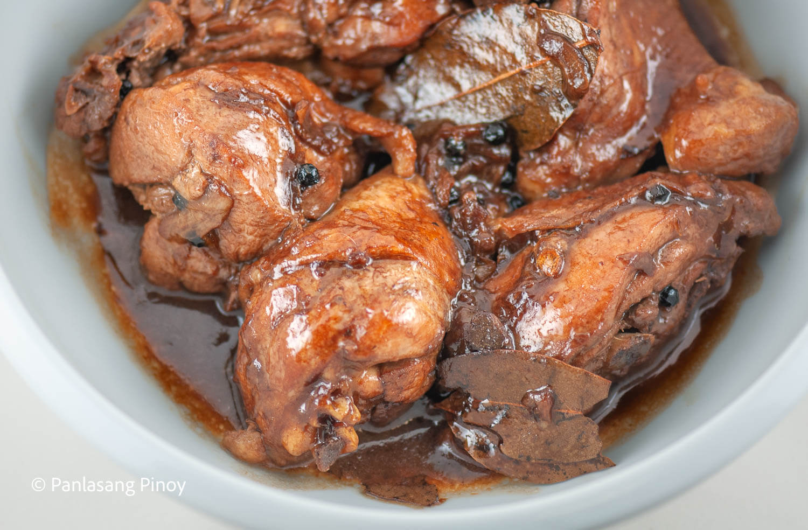

Adobong Manok
Chicken Adobo
Home

Description
Adobong Manok or Chicken Adobo in English is a savory meal served usually with white rice in most Filipino Households. Its known for the simplicity of its cooking method and ingredients required, resulting to a delicious dish.
Ingredients
- 2 tablespoons vegetable oil
- 1 (3 pound) chicken, cut into pieces
- 1 large onion, quartered and sliced
- 2 tablespoons minced garlic
- ⅔ cup low sodium soy sauce
- ⅓ cup white vinegar
- 1 tablespoon garlic powder
- 2 teaspoons black pepper
- 1 bay leaf
Steps
- Heat vegetable oil in a large skillet over medium-high heat. Cook chicken pieces until golden brown, 2 to 3 minutes per side. Transfer chicken to a plate and set aside.
- Add onion and garlic to the skillet; cook until softened and brown, about 3 to 5 minutes.
- Pour in soy sauce and vinegar and season with garlic powder, black pepper, and bay leaf.
- Return chicken to pan, increase heat to high, and bring to a boil. Reduce heat to medium-low, cover, and simmer until chicken is tender and cooked through, 35 to 40 minutes.